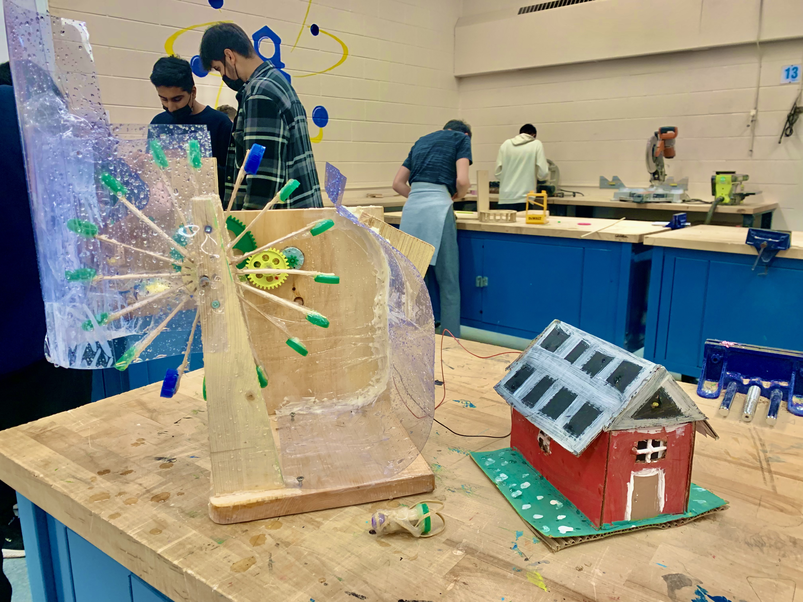
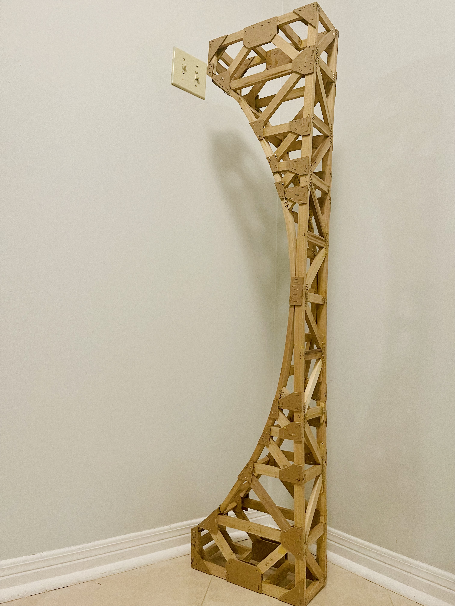
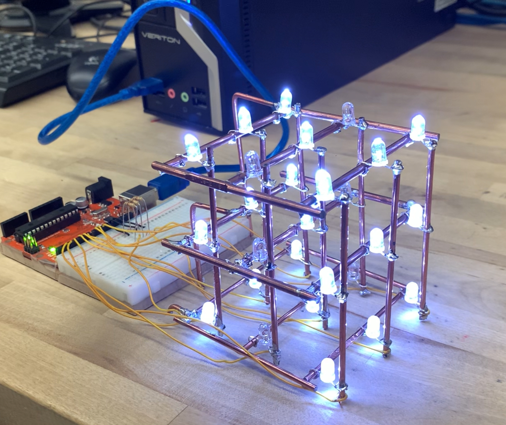
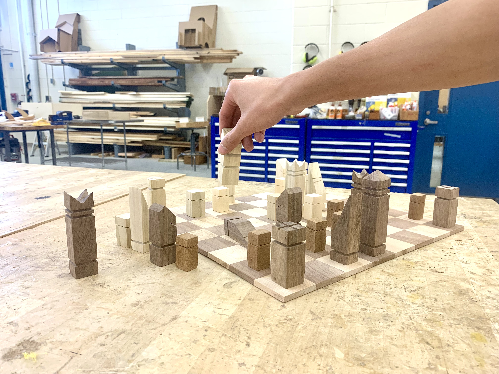

📘 Grade 9 — Sustainable Water Wheel Energy Project
Our challenge was to build a sustainable energy power generation plant and deliver the produced electricity to a consumer. I used wood, plastic, gears, and a motor generator to construct a water wheel system that successfully converted water flow into electricity. I faced several challenges: when the wood got wet, it warped, changing the precision of my build. To fix this, I covered the wood in plastic tape to make it waterproof. I also mistakenly nailed pieces in the wrong orientation, which misaligned the axle hole. I drilled new holes to adapt. The water pressure from the faucet kept popping off my homemade nozzle, so I upgraded to a hose adapter, which solved the issue. My design had many strengths. The gear system allowed the water wheel to spin the generator at a 16:1 ratio. The entire setup was light and waterproof, generating over 35 volts—enough to power eight LED lights and a motor-driven windmill. My DIY nozzle design with a 0.75 cm output dramatically increased water pressure and performance. There were weaknesses too: the wheel wobbled due to misaligned assembly, and the caps couldn't capture all the water effectively. High pressure also caused some leaking and the axle to occasionally disconnect. If I could redo it, I'd drill the axle holes more precisely, laminate the wood, use a breadboard for a cleaner circuit, and install a brighter white LED. On test day, my power plant outperformed all others—only my system could power both the lights and the windmill. This project taught me how critical design, problem-solving, and iteration are to engineering success.

📙 Grade 10 — Wooden Bridge Engineering Challenge (Under-Arch Bridge with Steam-Bent Wood)
For this project, I was tasked with designing and building a model wooden bridge that could span one metre and hold as much weight as possible. This challenge required me to apply everything I had learned about forces, geometry, and materials throughout the semester. After researching different bridge types—including arch, suspension, beam, and truss designs—I chose to construct a Pratt truss bridge because of its strong load distribution and minimal deflection under stress. I planned my design to scale, imagining the model as if it were to span a 100-metre gorge. I considered key engineering concepts like tension, compression, shear, and torsion, and how they act on bridge structures. I also learned about how materials like wood respond to these forces and how joints and glue placement affect performance. One of the most difficult parts of the project was achieving symmetrical trusses on both sides and aligning the joints cleanly so the bridge wouldn’t twist or sag. I used diagonal bracing and reinforced the base to improve torsional resistance. The finished product held a respectable amount of weight, though I knew that with tighter construction and improved truss intersections, it could have been even stronger. Graham Monks and I wanted to push the limits of what we could do with our bridge design, so instead of sticking with traditional truss geometry, we tried to think outside the box and build a curved under-arch bridge. We engineered and built a wood steamer to bend wooden components, allowing us to form gentle arches that would help distribute loads in a more fluid and natural way. Bending the wood was one of the most exciting parts of the project. It took a lot of trial and error—figuring out how much steam was enough, how long to treat the wood, and how to clamp it into the right shape without breaking it. The curved under-arch looked amazing and actually supported a decent amount of weight, even though we didn’t follow the same straight truss patterns as most groups. This project deepened my understanding of structural engineering and made me more aware of the balance between efficiency, strength, and design in real-world construction. I also gained confidence in woodworking, planning, and applying science to practical builds. Our task was to build a wooden bridge capable of holding the most weight. I learned about tension, compression, and truss design. My bridge wasn’t the strongest, but the process taught me how small design changes drastically affect structural performance. I also learned to use basic wood tools and plan a build from sketch to execution.

📕 Grade 11 — 3x3x3 LED Cube
What I loved most was seeing the LED cube light up with patterns I had coded—it felt like I had brought something to life. The toughest part was the soldering and debugging process, which required extreme care and problem-solving. I chose these projects to combine creativity with engineering. I realized how powerful it is to build tangible things from scratch and how coding, electronics, and design can all intersect in meaningful ways. These projects helped me understand the importance of iteration and user-friendly design. I thought outside the box and used copper rods as the structure of the cube instead of using the diodes of the led.
📕 Grade 11 — Chess Board
What I enjoyed most was bringing something I’m passionate about—chess—to life with my own hands. I’ve always liked the game, but never owned a real set. So making one from scratch, especially using rich woods like mahogany and pine, made the experience personal and satisfying. Seeing the final 8x8 board with each handcrafted 2x2 inch square gave me a sense of pride I don’t usually get from store-bought items. The hardest part by far was building the base of the board. I wanted it to not just look clean and professional, but also function as storage for all 34 pieces (32 standard + 2 extra queens). Designing a base that could house the pieces neatly and securely took precision, patience, and a few adjustments. Getting the alignment just right—especially when working with multiple compartments—pushed my problem-solving skills. I chose this project because it reflects who I am. I love chess, and this was a way to merge my interest in design, engineering, and strategy. I didn’t want to just make something for the sake of it—I wanted it to mean something. I also didn’t have my own chess set at home, so this was a chance to fill that gap in a meaningful, creative way. I learned how important planning and time management are for a successful project. Allocating days for each part—designing, cutting, sanding, and assembling—helped keep me on track, even with things like lacrosse games cutting into my time. I also gained a better understanding of woodworking tools like the table saw, band saw, and planer, and how to use them safely and effectively. Beyond the technical side, the project reminded me that precision, patience, and passion are at the core of any great creation. Most importantly, it showed me that hands-on craftsmanship can be just as rewarding as intellectual work, especially when you’re building something that combines both.


📗 Grade 12 — BB8 DROID
What I enjoyed most was watching our BB8 droid come to life—that unforgettable moment when the head bobbed in sync and the body rolled just like in the movies. It felt like engineering magic. I especially loved the problem-solving journey: transforming a cardboard prototype into a 3D-printed, omnidirectional robot with LED lights, sound effects, and magnetic coupling. It wasn’t just a build—it was an invention. Each challenge made success even more rewarding. The biggest challenge was perfecting the mechanics inside a sphere. Unlike typical robots on flat platforms, BB8 required maintaining balance and smooth movement within a hollow ornament ball while supporting a separate magnetically-attached head. Controlling weight distribution, traction, and motor alignment in a limited space pushed my design and mechanical skills to their limits. Another major hurdle was dealing with judgment and criticism from others who underestimated the difficulty of using tools like 3D printing—despite the effort behind it. I chose BB8 because it combined engineering, creativity, and personal interest in robotics and Star Wars. I didn’t want to make a basic robot—I wanted to challenge myself with something ambitious, with moving parts, personality, and innovation. I also wanted to break the mold of what a typical school project looks like and show that engineering can be fun, artistic, and technically advanced. This project taught me that true engineering is about iteration, patience, and resourcefulness. I built and tested multiple prototypes using cardboard before committing to a 3D-printed chassis. I learned how to balance mechanical components, route wiring efficiently, and create a functional device within complex limitations. I also realized that tools don’t define the value of a project—the thought process, problem-solving, and effort do. It’s not about making everything from scratch, but making smart choices to solve hard problems.